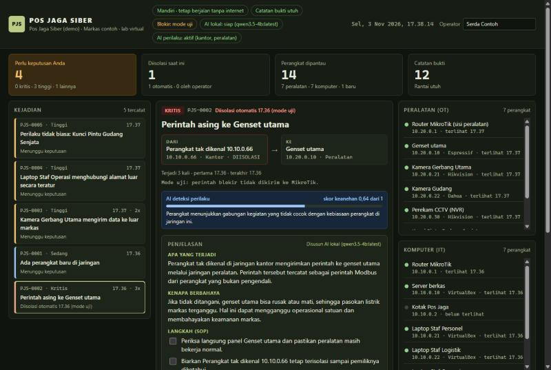
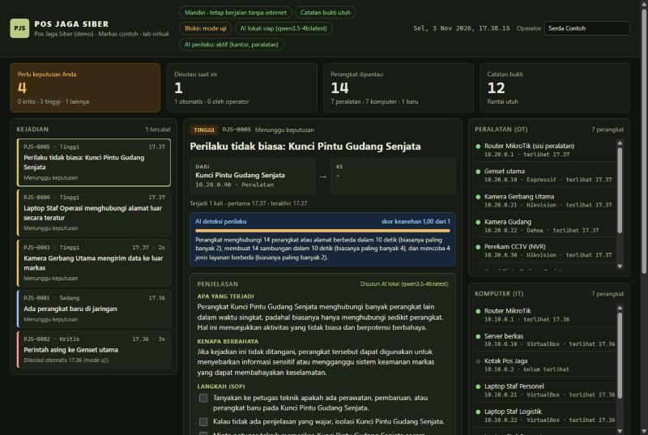
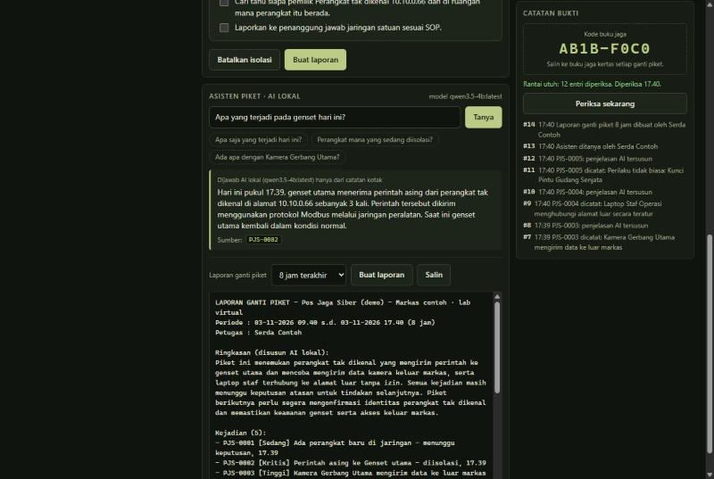
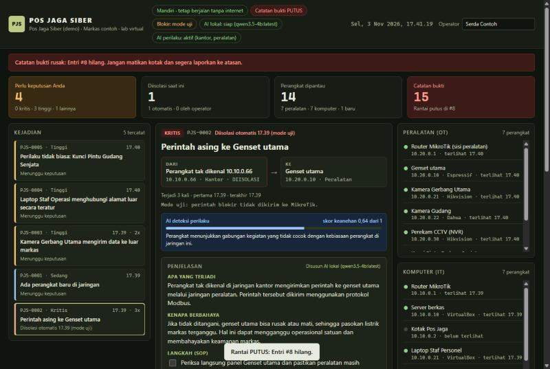

Penjaga Jaringan Markas yang Mandiri
Andi Arif Abdillah · Fairuz Akhdan · Aditya Maulana Pamungkas
Peralatan penting tersambung jaringan, tetapi tidak bisa dilindungi cara biasa
Dikendalikan lewat Modbus. Tidak bisa dipasangi antivirus. Satu perintah asing = listrik padam.
Sering diam-diam mengirim rekaman ke server pabrik di luar negeri tanpa sepengetahuan pengguna.
Kalau dikuasai penyerang, bisa dipakai memindai seluruh jaringan markas dari dalam.
⚠️ Petugas jaga bukan ahli keamanan siber — mereka butuh alat yang menjelaskan, bukan alat yang membutuhkan keahlian.
Penjaga jaringan markas yang bekerja mandiri, menjelaskan ancaman dalam bahasa sehari-hari, dan langsung mengamankan peralatan penting seperti genset dan kamera.
Semua lalu lintas jaringan kantor dan peralatan dipantau 24/7
Kejadian kritis pada peralatan diisolasi otomatis lewat router MikroTik
AI lokal menjelaskan setiap kejadian dalam bahasa sederhana + langkah SOP
Catatan bukti anti-ubah dengan rantai hash dan tanda tangan digital
Mata — membaca paket jaringan
Otak — mengenali, memutuskan, bertindak
Wajah — petugas melihat dan memutuskan
Machine learning (Isolation Forest) mempelajari kebiasaan normal, menandai perangkat yang berubah perilaku. Menangkap serangan tanpa aturan.
Model bahasa lokal (Qwen 2.5 via Ollama) menjelaskan kejadian dalam bahasa sehari-hari. Petugas tidak perlu tahu istilah teknis.
Petugas bertanya dengan bahasa biasa. Laporan ganti piket disusun otomatis. AI hanya menjawab dari data kotak (RAG).
🔑 Prinsip utama: AI menemukan dan menjelaskan, sedangkan aturan tetap dan manusia yang memutuskan. Tidak ada AI yang bisa memblokir.
Bukan hanya skor — AI menjelaskan kenapa aneh dengan membandingkan setiap ciri dengan kebiasaan normalnya.
Kunci pintu memindai jaringan
Kamera mengirim ke luar
800 contoh normal
Mengenali perangkat biasa, menandai perangkat baru yang masuk jaringan
Kejadian kritis pada peralatan OT diisolasi lewat MikroTik dalam hitungan detik
Perintah asing ke genset, data ke luar markas, sinyal berkala (beaconing)
Serangan yang belum punya aturan tertangkap machine learning
AI lokal menjelaskan apa & kenapa, plus langkah SOP yang bisa dicentang
Tanya jawab dan laporan ganti piket otomatis dengan RAG
Rantai hash + tanda tangan Ed25519 + kode buku jaga kertas
Tetap menjaga saat internet putus. Data markas tidak pernah keluar
Kejadian kritis diisolasi otomatis, dijelaskan AI, dengan langkah SOP

Skor keanehan 1.00 dengan penjelasan kenapa — ditangkap tanpa aturan khusus

Tanya jawab dari data kotak + laporan ganti piket otomatis

AI tidak dipercaya untuk memutuskan — hanya untuk menemukan dan menjelaskan

| Komponen | Pembuat | Dipakai Untuk |
|---|---|---|
| Python (tanpa pustaka tambahan) | PSF | Seluruh program kotak |
| Suricata | OISF | Membaca lalu lintas jaringan |
| MikroTik RouterOS / CHR | MikroTik | Router & isolasi perangkat |
| Ollama + Qwen 2.5 | Ollama / Alibaba Cloud | AI penjelas & asisten lokal |
| Isolation Forest | Liu, Ting, Zhou (2008) | AI deteksi perilaku (Python murni) |
| Ed25519 (RFC 8032) | IETF | Tanda tangan catatan bukti |
| VirtualBox | Oracle | Lab virtual |
💡 Kode dan dokumentasi dikembangkan dengan bantuan asisten AI (Claude, buatan Anthropic)
Pos Jaga Siber: penjaga jaringan markas yang bekerja mandiri, menjelaskan ancaman dalam bahasa sehari-hari, dan langsung mengamankan peralatan penting.
Coba sendiri: python -m pjs demo --putar --baru
github.com/AndiArifAbdillah/pos-jaga-siber